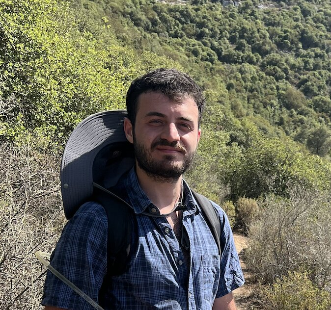

PhD Student — algebraic topology, condesed mathematics & algebraic geometry
I am a PhD student at the Weizmann Institute of Science under the supervision of Shachar Carmeli. My areas of interest are algebraic topology, algebraic geometry, and condensed mathematics.
Papers
Contact